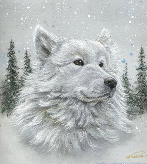
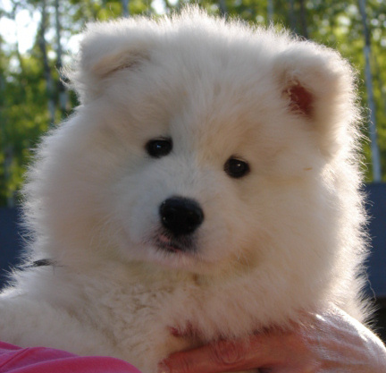

<table border="0" class="layout">
    <tbody>
        <tr>
            <td valign="top">
                <div class="holster">
                    <div class="block_container s3 b-text b-static-text user_css_12816005438" id="e_127779803653">
                        <p></p>
                        <p> </p>
                        <p><em><strong>Бабылёва Светлана Ивановна</strong></em></p>
                        <p>тел.432-51-96 или 8-909-900-50-98</p>
                        <p><strong>Заходите к нам в <a href="http://samoeds.narod.ru/">гости</a></strong></p>
                        <p><a href="http://samoeds.narod.ru/"></a></p>
                    </div>
                    <div class="block_container s3 b-image txt-center" id="e_128281426090"><span>&nbsp;</span></div>
                </div>
            </td>
            <td>
                <div class="holster">
                    <div class="block_container s3 b-text b-static-text user_css_12816005438" id="e_12828143602">
                        <p style="text-align: center;"><span style="color: #006600;"><span style="color: #0000ff;"><strong>Самоед</strong></span></span></p>
                        <p style="text-align: justify;"><span style="color: #006600;"><span style="color: #0000ff;"><strong>Из истории породы: </strong>передки самоедских лаек - крепкие северо-европейские шпицеобразные собаки. Самоеды - старинное название кочевого сибирского народа, который запряг лаек в нарты и обучил их пасти северных оленей. Порода прославилась своей неприхотливостью и выносливостью - полячрные исследователи охотно брали этих собак в свои трудные экспедиции. Исходно окрас самоедов бал различным - обычно чёрным, чёрно-белым или чёрно-подпалым, но в конце концов на первый план вышел белый цвет. В конце прошлого века торговцы пушниной осознали потенциальную ценность блестяще-белой шерсти самоедских лаек и начали импортировать их в США и Европу. В Британию эти собаки попали в 1889 году; среди их почитательниц была супруга Эдуарда VII - королева Александра. На своей родине эта ездовая собака используется и как сторожевая и оленегонная.</span></span></p>
                        <p style="text-align: justify;"><span style="color: #006600;"><span style="color: #0000ff;"><strong>Общая характеристика: </strong>это жизнерадостные, понятливые, добрые дружелюбные собаки. Очень весёлые, с уравновешенным характером, необыкновенно красивые.</span></span></p>
                        <p style="text-align: justify;"><span style="color: #006600;"><span style="color: #0000ff;"><strong>Содержание и уход: </strong>этим собакам надо очень много двигаться и, по возможности, дрессировать. Регулярно расчёсывайте шерсть гребнем и чёткой, если собака намокла - вытирайте её полотенцем. Раз в год у этих собака сменяется подшерсток и в это время её необходимо старательно вычёсывать. Часто купать не рекомендуется. </span></span></p>
                        <p style="text-align: justify;"><span style="color: #006600;"><span style="color: #0000ff;"><strong>Размеры:</strong> рост 51-56 см (кобели), 46-51 см (суки).</span></span></p>
                        <p style="text-align: justify;"><span style="color: #006600;"><span style="color: #0000ff;">___________________________________________</span></span></p>
                        <p style="text-align: justify;"> </p>
                    </div>
                </div>
            </td>
        </tr>
    </tbody>
</table>​
